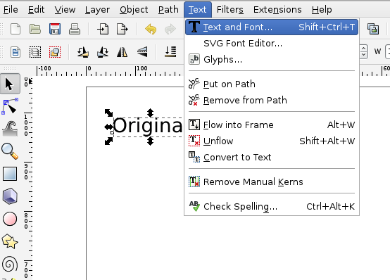

水面に写ったようなロゴを作る
ここではinkscapeをつかって、水面に写ったようなロゴの作り方を紹介します。
 水面に写ったようなロゴ
水面に写ったようなロゴ
始めにツールボックスから文字ツールを選択して適当な文字を書きます。ここでは「Original」と書きます。
次に上のメニューバーの「Text」→「Text and Font」を選択します。

テキストボックスが出て来るので、好きなフォントを選んで[Apply]をクリックします。
ここでは「Pilgi」というフォントを使用しました。
次にフォントの色を変えます。ツールコントロールバーの「Fill and Stloke」で文字の色を変えます。
ここでは透明感をだす為に円状のグラデーションをかけます。
初期設定のグラデーションだと文字がはっきりと見えませんので、グラデーションツールを選択してグラデーションの領域を広げます。
続いて文字を選択したまま下図のオブジェクトを水平にコピーするボタンをクリックします。
すると文字が重なってコピーされます。
コピーした文字をcontlorを押しながら下へ垂直移動させます。
移動させた文字を選択したまま「Fill and Stroke」ボックスの[Opacity]（透明度）を30％ほどにします。
これで下に反射した様な文字ができました。
その他にもFilterやクローン、ぼかしを使って様々な文字表現ができます。